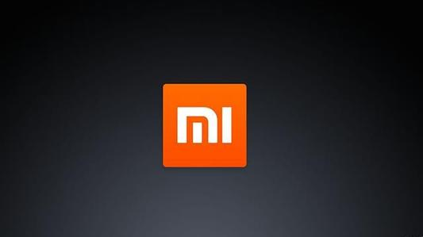

优质商家

- 1998年6月18日，刘强东先生在中关村创业，成立京东公司。 2001年6月，京东成为光磁产品领域最具影响力的代理商，销售量及影响力在行业内首屈一指。 2004年1月，京东开辟电子商务领域创业实验田，京东多媒体网正式开通，启用新域名。 2004年7月 京东在全国首创即时拍卖系统——京东拍卖场正式开业，目前已经成为各大IT电子商务网 站争相模仿对象之一。 2005年11月，京东多媒体网日订单处理量稳定突破500个。 2006年1月，京东宣布进军上海，成立上海全资子公司。 2006年6月，京东开创业内先河，全国第一家以产品为主体对象的专业博客系统――京东产品博客系统正式开放。 2006年6月，京东在由第三方电子支付公司网银在线与中国计算机报联合主办的“网银杯” 2006超级网商评选活动中，荣获最受欢迎的IT产品网商称号。 2007年5月，京东广州全资子公司成立，全力开拓华南市场。广州全资子公司的成立代表着京东由北京、上海、广州三地为基础覆盖全国的销售网络的形成。 2007年6月，京东商城日订单处理量突破3000个。 2007年6月，成功改版后，京东多媒体网正式更名为京东商城，以全新的面貌屹立于国内B2C市场。 2007年6月，京东正式启动全新域名，并成功改版。 2007年7月，京东建成北京、上海、广州三大物流体系，总物流面积超过5万平方米。 2007年8月，京东赢得国际著名风险投资基金——今日资本的青睐，首批融资千万美金。 2007年10月，京东商城在北京、上海、广州三地启用移动POS上门刷卡服务，开创了中国电子商务的先河。 2008年6月，京东商城在2008年初涉足销售平板电视，并于6月将空调、冰洗、电视等大家电产品线逐一扩充完毕。标志着京东公司在建司十周年之际完成了3C产品的全线搭建，成为名副其实的3C网购平台。 2009年1月，京东商城获得来自今日资本、雄牛资本以及亚洲著名投资银行家梁伯韬先生的私人公司共计2100万美元的联合注资。也是2008年金融危机爆发以来，中国电子商务企业获得的第一笔融资。 2009年2月，京东商城尝试出售特色上门服务，此举成为探索B2C增值服务领域的重要突破，也是商品多元化的又一体现。 2009年3月，京东商城单月销售额突破2亿元，成为国内首家也是唯一一家月销量突破2亿元大关的B2C电子商务公司。 2009年6月，京东商城单月销售额突破3亿元，与2007年全年销售额持平。同时，日订单处理能力突破20000单。 2010年12月23日，京东商城团购频道于12月23日正式上线，京东商城注册用户均可直接参与团购。 2011年4月1日，刘强东宣布完成C2轮融资，投资方俄罗斯的DST、老虎基金等六家基金和一些社会知名人士融资金额总计15亿美元，其中11亿美元已经到账。 2012年5月29日，京东商城集团旗下日韩品牌综合类网上购物商城——迷你挑正式上线！ 2012年11月27日，京东叫板阿里巴巴 涉水供应链金融领域。

- 2003年5月10日，淘宝网成立，由阿里巴巴集团投资创办。10月推出第三方支付工具“支付宝”，以“担保交易模式”使消费者对淘宝网上的交易产生信任。2003年全年成交总额3400万元。 2004年，推出“淘宝旺旺”，将即时聊天工具和网络购物相联系起来。 2005年，淘宝网超越eBay易趣，并且开始把竞争对手们远远抛在身后。5月，淘宝网超越日本雅虎，成为亚洲最大的网络购物平台。2005年成交额破80亿元，超越沃尔玛。 2006年，淘宝网成为亚洲最大购物网站，就在这一年，淘宝网第一次在中国实现了一个可能——互联网不仅仅是作为一个应用工具存在，它将最终构成生活的基本要素，调查数据显示，每天有近900万人上淘宝网"逛街"。 2007年，淘宝网不再是一家简单的拍卖网站，而是亚洲最大的网络零售商圈。这一年，淘宝网全年成交额突破400亿，成中国第二大综合卖场。 2008年，淘宝B2C新平台淘宝商城（天猫前身）上线；汶川地震捐款平台上线，共筹得网友捐款超2000万；9月份，淘宝网单月交易额突破百亿大关。 2009年，已成为中国最大的综合卖场，全年交易额达到2083亿元。 2010年1月1日 淘宝网发布全新首页，此后聚划算上线，然后又推出一淘网。 2011年6月16日，阿里巴巴集团旗下淘宝公司分拆为三个独立的公司，即沿袭原C2C业务的淘宝网（taobao），平台型B2C电子商务服务商淘宝商城(tmall）和一站式购物搜索引擎一淘网（etao）。在新的架构中，淘宝分拆后的三家公司采用总裁加董事长的机制运营。 2012年1月11日上午，淘宝商城正式宣布更名为“天猫”。2012年3月29日天猫发布全新Logo形象。2012年11月11日，天猫借光棍节大赚一笔，宣称13小时卖100亿，创世界纪录。 2012年4月20日，《IT时代周刊》出版的第08期封面文章曝光称，中国知名电商淘宝内部员工存在集体性腐败行为。就此，阿里巴巴集团副总裁陶然表示，不能因为个体的事件就夸大成为团体腐败。陶然表示，淘宝在两年前就设立了廉政部，对举报行为进行调查，核实后会进行处理。 2012年，11月11日，淘宝加天猫平台，将网购单日记录再次刷新为191亿元。 2013年，阿里调整为25个事业部，阿里巴巴通过其全资子公司阿里巴巴(中国)，以5.86亿美元购入新浪微博公司发行的优先股和普通股，占新浪微博公司全稀释摊薄后总股份的约18%，将淘宝电商和SNS的结合进行到底。 2015年12月24日，阿里巴巴集团与国家认证认可监督管理委员会信息中心正式签署合作框架协议，双方共同推出“云桥”数据共享机制，阿里巴巴成为首家直接接入国家CCC认证信息数据库的电商平台。阿里巴巴旗下天猫、淘宝、1688等电商平台将导入CCC认证信息数据库实现自动校验和标注，从而避免无证以及假冒认证产品。 2016年1月27日，“成交记录”模块被正式隐藏，但原先销量、评价等信息不会消失，仍正常累积。”阿里巴巴公关部吴铭欣说，“取消(成交记录)后，将会减少不法分子通过成交记录进行的诈骗情形。”同时，如果消费者想要了解销量，只需将鼠标放到“交易成功”上，就可看到近30天的已出售件数。
- 唯品会2012年3月23日将登陆美国纽交所，自2011年中国概念股在美国资本市场爆出诚信危机后，中国公司赴美IPO窗口被冰封，唯品会的IPO具有风向标作用，备受关注。唯品会自2012年2月18日递交上市申请后，进展比较顺利，不久公布发行价区间并进行路演，但是认购情况不是太乐观，3月23日上市当天公布发行价为6.5美元，远低于此前8.5-10.5美元的发行价区间。 那么，这家开创中国闪购模式的新兴电商到底如何呢？本报告从唯品会的发展历程丶行业和商业模式丶基于盈利前景探讨的财务解析丶存在的风险因素丶管理团队和股权结构等进行全面解读。 一丶唯品会的发展历程：成立3年即赴美上市 唯品会全称为广州唯品会信息科技有限公司， 2008年8月成立于广东，同年旗下网站唯品会(vipshop)上线，两位创始人沈亚和洪晓波都是温州的传统商人，此前曾合伙做电子外贸生意，唯品会还有三个创始投资人,都是沈亚和洪晓波在长江商学院的同学，也是老乡，5人筹集3000万人民币作为创始资金。 唯品会的商业模式为“名牌折扣+限时抢购+正品保险”，即“闪购”模式，开山鼻祖为法国Vente Privee，其成立于2001年，而后美国网站Gilt对这种商业模式进行了改造，专注于奢侈品品牌的打折销售。唯品会创业早期也在奢侈品品牌折扣销售的做过尝试，但奢侈品网购在中国受用户群小以及奢侈品消费习惯，并不是最佳的网络打折商品；唯品会2008年年底开始推国内二丶三线品牌的服装，订单开始上升，唯品会此后将市场定位为国内二丶三线品牌的产品，很多用户也是来自二三线城市。 唯品会此后迎来快速增长，2009年唯品会的订单开始增至7.1万单，2010年更是剧增至92.7万单；2010年12月唯品会获得红杉和DCM的联合风险投资，融资金额约为2000万美元； 2011年5月，唯品会再次获得红杉和DCM的联合风险投资5000万美元。 2012年2月18日唯品会向美国SEC提交上市申请，3月23日将登陆纽交所，发行价6.5美元，融资约7150万美元。 二丶唯品会的爆炸式增长：新兴的闪购模式+中国网络折扣零售的市场机会 自成立的这三年多来，唯品会可谓实现了爆炸式增长：2009-2011年营收分别为280.48万丶3258.2万丶2.27亿美元，年复合增长为800%，最近一个季度（2011年Q4）营收同比增长502%到1.05亿美元，单个季度营收突破1亿美元大关；营收背后是用户数和订单数的大幅增长，2009-2011年唯品会活跃客户量分别为3.8万人丶25.5万人和133万人；总订单量分别为7.1万个丶92.7万个和726.9万个。 那么唯品会为何能实现这种爆炸式的增长呢？合适的市场时机用合适的模式做了合适的事。具体分析如下： 1丶 新兴的闪购模式：唯品会是线上时尚品牌B2C网站，向消费者提供时装丶护肤品丶箱包丶皮具丶配饰丶香水等商品，并以比零售大幅优惠的折扣价销售，在网站首页以每日精选的形式推送折价商品（北京时间每天早上10:00），通常设置数量（如每人限量2件同类商品丶一个购物车一次限20件商品）和购买时间限制。 唯品会采用的是“闪购”（flash sales）这种新兴的商业模式，整个运作过程大概是这样的：采购团队负责和品牌商建立合作关系，以极的价格价采购供应商的库存产品，在采购环节，一般只需要预付10-15%的押金（部分长期关系良好的厂商甚至可以不收取押金）；然后唯品会在网站上以“闪购”丶“特卖会”等限时抢购的方式进行促销活动；活动结束后，唯品会可以将剩下为卖完的商品退给供应商（促销活动结束后15天内可退），整个过程大概40-50天结束。 闪购等限时抢购形式适合折扣业：（1）品牌刚打折时很多人去买，但是很快无法吸引更多顾客，打折的效应很快递减，而限时抢购的模式有助于提升商品的新鲜度，唯品会每天用闪购这样的形式可以不停刺激消费，甚至会让用户“成瘾”，培养一种消费习惯；（2）对于品牌供应商而言，抢购这种模式具有高频丶量大的特点，可以帮助供应商较快处理库存商品；（3）对于唯品会而言，由于“闪购模式”库存预付的保证金低丶卖不出的商品可以退给供应商丶库存周转快，使得唯品会对运营资金的要求比较低，资金周转快，运营杠杆比较高，有利于在短时间内爆发。
- 苏宁易购， [1] 是苏宁易购集团股份有限公司旗下新一代B2C网上购物平台，现已覆盖传统家电、3C电器、日用百货等品类。2011年，苏宁易购强化虚拟网络与实体店面的同步发展，不断提升网络市场份额。 未来三年，苏宁易购将依托强大的物流、售后服务及信息化支持，继续保持快速的发展步伐；到2020年，苏宁易购计划实现3000亿元的销售规模，成为中国领先的B2C平台之一。目前位居中国B2C市场份额前三强。总部位于南京。2015年8月17日苏宁易购正式入驻天猫。 2017年11月，苏宁官方正式宣布，成立苏宁易购汽车公司。 2018年1月14日，苏宁云商发布公告，拟计划将“苏宁易购”这一苏宁智慧零售的渠道品牌名称升级为公司名称，对公司中文名称、英文名称、证券简称等拟进行变更。 [1]
- 2016年 华为支持全球170多个国家和地区的1,500多张网络的稳定运行，服务全球1/3以上的人口。 华为已在全球部署了超过60张4.5G网络；华为无线家庭宽带解决方案(WTTx)，覆盖全球3,000万家庭；华为在超过100个国家累计部署190多张移动承载网络。 华为已在全球获得了170多个云化商用合同；VoLTE和VoWiFi解决方案累计服务于全球110张网络；数字业务云服务平台累计引入超过4,000家合作伙伴，聚合超过60万数字内容和应用。 华为联合500多家合作伙伴为全球130多个国家和地区的客户提供云计算解决方案，共部署了超过200万台虚拟机和420个云数据中心。 华为智慧城市解决方案已应用于全球40多个国家的100多个城市，华为还主笔了9项智慧城市中国国家标准；华为平安城市解决方案已服务于80多个国家和地区的200多个城市，覆盖8亿多人口。 在金融领域，华为全渠道银行解决方案已服务于全球300多家金融机构，包括全球十大银行中的6家；在能源领域，华为全联接电网解决方案已应用于全球65个国家，服务170多个电力客户；在交通领域，华为已与业内60多个合作伙伴开展合作，提供数字城轨、智慧机场等解决方案，服务全球超过22万公里的铁路和高速公路、15家以上客流量超3,000万的机场。 全年智能手机发货量达到1.39亿台，同比增长29%，连续5年稳健增长；全球市场份额提升至11.9%，居全球前三。 2015年 根据世界知识产权组织公布数据，2015年企业专利申请排名方面，华为以3898件连续第二年位居榜首。 华为LTE已进入140多个首都城市，成功部署400多张LTE商用网络和180多张EPC商用网络。 光传送领域，华为与欧洲运营商共同建设了全球首张1T OTN网络，与英国电信合作完成业界最高速率3Tbps光传输现网测试。 发布了全球首个基于SDN架构的敏捷物联解决方案。 发布了全球首款32路x86开放架构小型机昆仑服务器。 智能手机发货超1亿台。华为在全球智能手机市场稳居全球前三，在中国市场份额位居首位（GFK数据）。 2014年 在全球9个国家建立5G创新研究中心。 承建全球186个400G核心路由器商用网络。 为全球客户建设480多个数据中心，其中160多个云数据中心。 全球研发中心总数达到16个，联合创新中心共28个。 在全球加入177个标准组织和开源组织，在其中担任183个重要职位。 2014年，智能手机发货量超过7500万台。 2013年 全球财务风险控制中心在英国伦敦成立，监管华为全球财务运营风险，确保财经业务规范、高效、低风险地运行；欧洲物流中心在匈牙利正式投入运营，辐射欧洲、中亚、中东非洲国家。 作为欧盟5G项目主要推动者、英国5G创新中心(5GIC)的发起者，发布5G白皮书，积极构建5G全球生态圈，并与全球20多所大学开展紧密的联合研究；华为对构建无线未来技术发展、行业标准和产业链积极贡献力量。 400G路由器商用方案得到49个客户的认可并规模投入商用；此外，华为还率先发布了骨干路由器1T路由线卡，以及40T超大容量的波分样机和全光交换网络AOSN新架构。 持续领跑全球LTE商用部署，已经进入了全球100多个首都城市，覆盖九大金融中心。 发布全球首个以业务和用户体验为中心的敏捷网络架构及全球首款敏捷交换机S12700，满足云计算、BYOD、SDN、物联网、多业务以及大数据等新应用的需求。 以消费者为中心，以行践言(Make it Possible)持续聚焦精品战略，其中旗舰机型华为Ascend P6实现了品牌利润双赢，智能手机业务获得历史性突破，进入全球TOP3，华为手机品牌知名度全球同比增长110%。 2012年 持续推进全球本地化经营，加强了在欧洲的投资，重点加大了对英国的投资，在芬兰新建研发中心，并在法国和英国成立了本地董事会和咨询委员会 在3GPP LTE核心标准中贡献了全球通过提案总数的20% 发布业界首个400G DWDM光传送系统，在IP领域发布业界容量最大的480G线路板 和全球33个国家的客户开展云计算合作，并建设了7万人规模的全球最大的桌面云 推出的Ascend P1、Ascend D1四核、荣耀等中高端旗舰产品在发达国家热销 2011年 发布GigaSite解决方案和泛在超宽带网络架构 U2Net。 建设了20个云计算数据中心。 智能手机销售量达到2000 万部。 以5.3亿美元收购华赛。 整合成立了“2012 实验室”。 发布HUAWEI SmartCare 解决方案。 在全球范围内囊获6大LTE顶级奖项。 2010年 全球部署超过80个SingleRAN商用网络，其中28个已商用发布或即将发布LTE/EPC业务。 在英国成立安全认证中心。 与中国工业和信息化部签署节能自愿协议。 加入联合国世界宽带委员会。 获英国《经济学人》杂志2010年度公司创新大奖。 2009年 无线接入市场份额跻身全球第二。 成功交付全球首个LTE/EPC商用网络，获得的LTE商用合同数居全球首位。 率先发布从路由器到传输系统的端到端100G解决方案。 获得IEEE标准组织2009年度杰出公司贡献奖。 获英国《金融时报》颁发的“业务新锐奖”，并入选美国Fast Company杂志评选的最具创新力公司前五强。 主要产品都实现资源消耗同比降低20%以上，在全球部署了3000多个新能源供电解决方案站点。 2008年 被商业周刊评为全球十大最有影响力的公司。 根据Informa的咨询报告，华为在移动设备市场领域排名全球第三。 首次在北美大规模商用UMTS/HSPA网络，为加拿大运营商Telus和Bell建设下一代无线网络。 移动宽带产品全球累计发货量超过2000万部，根据ABI的数据，市场份额位列全球第一。 全年共递交1737件PCT专利申请，据世界知识产权组织统计，在2008年专利申请公司(人)排名榜上排名第一；LTE专利数占全球10%以上。 2007年 与赛门铁克合作成立合资公司，开发存储和安全产品与解决方案。 与Global Marine合作成立合资公司，提供海缆端到端网络解决方案。 在2007年底成为欧洲所有顶级运营商的合作伙伴。 被沃达丰授予“2007杰出表现奖”，是唯一获此奖项的电信网络解决方案供应商。 推出基于全IP网络的移动固定融合（FMC）解决方案战略，帮助电信运营商节省运作总成本，减少能源消耗。 2006年 以8.8亿美元的价格出售H3C公司49%的股份。 与摩托罗拉合作在上海成立联合研发中心，开发UMTS技术。 推出新的企业标识，新标识充分体现了我们聚焦客户、创新、稳健增长和和谐的精神。 2005年 海外合同销售额首次超过国内合同销售额。 与沃达丰签署《全球框架协议》，正式成为沃达丰优选通信设备供应商。 成为英国电信（简称BT）首选的21世纪网络供应商，为BT21世纪网络提供多业务网络接入(MSAN)部件和传输设备 2004年 与西门子合作成立合资公司，开发TD-SCDMA解决方案。 获得荷兰运营商Telfort价值超过2500万美元的合同，首次实现在欧洲的重大突破。 2003年 与3Com合作成立合资公司，专注于企业数据网络解决方案的研究。 2002年 海外市场销售额达5.52亿美元。 2001年 以7.5亿美元的价格将非核心子公司Avansys卖给爱默生。 在美国设立四个研发中心。 加入国际电信联盟（ITU）。 2000年 在瑞典首都斯德哥尔摩设立研发中心。 海外市场销售额达1亿美元。 1999年 在印度班加罗尔设立研发中心。该研发中心分别于2001年和2003年获得CMM4级认证、CMM5级认证。 1997年 推出无线GSM解决方案。 于1998年将市场拓展到中国主要城市 1995年 销售额达15亿人民币，主要来自中国农村市场。 1992年 开始研发并推出农村数字交换解决方案。 1990年 开始自主研发面向酒店与小企业的PBX技术并进行商用。 1987年 创立于深圳，成为一家生产用户交换机（PBX）的香港公司的销售代理。
- 
- 2010年4月成立，是一家专注于高端智能手机自主研发的移动互联网公司，由前Google、微软、金山等公司的顶尖高手组建。目前已获得来自Morningside、启明、IDG和小米团队4100万美元投资，其中小米团队56人投资1100万美元，公司估值2.5亿美元。2010年底推出手机实名社区米聊，在推出半年内注册用户突破300万。此外，小米公司还推出手机操作系统MIUI，当年6月底MIUI社区活跃用户达30万。2011年8月16日，小米公司通过媒体沟通会正式发布小米手机、米聊、MIUI是小米科技的三大核心产品。 小米手机[1]是小米公司（全称北京小米科技有限责任公司）研发的一款高性能发烧级智能手机。手机2011年8月16日发布，售价1999元，采用线上销售模式在小米科技的官网上进行零售。 小米公司由雷军创办，共计七名创始人，分别为创始人、董事长兼CEO雷军，联合创始人总裁林斌，联合创始人及副总裁黎万强、周光平、黄江吉、刘德、洪锋。 小米名字的由来，小米的LOGO是一个“MI”形，是Mobile Internet的缩写，代表小米是一家移动互联网公司；其次是 mission impossible，小米要完成不能完成的任务；当然，我们希望用小米加步枪来征服世界。最后，我们希望“小米”这个亲切可爱的名字成为大家的朋友。另外，小米的LOGO倒过来是一个心字，少一个点，意味着小米要让我们的用户省一点心。
-

- vivo为一个专注于智能手机领域的手机品牌，vivo和追求乐趣、充满活力、年轻时尚的群体一起打造拥有卓越外观、专业级音质、极致影像、愉悦体验的智能产品，并将敢于追求极致、持续创造惊喜作为vivo的坚定追求。 2014年vivo品牌的国际化之路全面开启，除中国大陆市场外，vivo进驻的海外市场包含印度、泰国、缅甸、马来西亚、印度尼西亚、越南和菲律宾。2016-2017年，vivo正式成为NBA中国官方合作伙伴 [1] 。 2016年底，vivo高层在媒体沟通会上透露，将在国内外成立研发中心 [2] ，国内部分有深圳、东莞长安、南京、杭州和北京，而在国外将在美国圣地亚哥分设研发中心 [2] 。vivo将由原来的音乐和拍照的单点技术突破很可能将变成从智能手机的整体技术创新全面推进。 [3] 2017年5月31日，vivo在京宣布将连续成为2018年及2022年两届世界杯全球官方赞助商。借助世界杯足球赛这一顶级赛事，vivo也将进一步提升国际影响力，扎实海外布局步伐，为未来品牌出海计划做铺垫 [4] 。 2017年，vivo智能手机销量出现严重下滑，目前位居世界第六位，出货量次于三星，苹果，华为，小米，OPPO。 [5]
- 海尔集团创业于1984年，是全球大型家电品牌，目前已从传统制造家电产品的企业转型为面向全社会孵化创客的平台。在互联网时代，海尔致力于成为互联网企业，颠覆传统企业自成体系的封闭系统，变成网络互联中的节点，互联互通各种资源，打造共创共赢新平台，实现攸关各方的共赢增值。 [1-2] 2017天猫双十一“亿元俱乐部”榜单显示，海尔位列第三名。 [3] 2018 年6月20日，世界品牌实验室(World Brand Lab)在北京发布了2018年《中国500最具价值品牌》分析报告。海尔(3502.78亿元)居第三位。 [4] 公司名称 海尔集团 外文名称 Haier 总部地点 中国山东省青岛市 成立时间 1984年 经营范围 家用电器 公司性质 上市公司 公司口号 你的生活智慧 我的智慧生活 年营业额 2016亿元（2016年） [2] CEO 张瑞敏 [5] 公益事业 全国246所希望学校 旗下品牌 海尔、统帅、卡萨帝、亚科雅 品牌价值 1516亿元 世界影响 全球500强前100位（2016年）
- 联想集团是1984年中国科学院计算技术研究所投资20万元人民币，由11名科技人员创办，是中国的一家在信息产业内多元化发展的大型企业集团，和富有创新性的国际化的科技公司。 从1996年开始，联想电脑销量一直位居中国国内市场首位；2005年，联想集团收购IBM PC（Personal computer，个人电脑）事业部；2013年，联想电脑销售量升居世界第一，成为全球最大的PC生产厂商。2014年10月，联想集团宣布了该公司已经完成对摩托罗拉移动的收购。 作为全球电脑市场的领导企业，联想从事开发、制造并销售可靠的、安全易用的技术产品及优质专业的服务，帮助全球客户和合作伙伴取得成功。联想公司主要生产台式电脑、服务器、笔记本电脑、智能电视、打印机、掌上电脑、主板、手机、一体机电脑等商品。 自2014年4月1日起， 联想集团成立了四个新的、相对独立的业务集团，分别是PC业务集团、移动业务集团、企业级业务集团、云服务业务集团。2016年8月，全国工商联发布“2016中国民营企业500强”榜单，联想名列第四。 [1]
- 易建联在 CBA 赛场上怒发冲冠，一甩手就脱掉了赞助商的李宁运动鞋，引发舆论哗然。20 亿元买下来的五年赞助费啊，难道就要这样付之东流了吗？ 纵观李宁的一生，汉城惨败，创业屡遭波折，最近三年亏损 30 亿元，和这些相比，小小一点风波又算得了什么？人生的大风大浪，已然见得太多，你易建联脱下的鞋子，我会让你亲自穿回去。 20 世纪的中国运动员，我只服李宁。 李宁今年 53 岁，他在运动员生涯中斩获金牌 106 枚，也因此被誉为 " 体操王子 "，并成为国际体育记者协会评价的全球二十五名 "20 世纪最佳运动员 " 中唯一的中国人。 任何想要赶超李宁的运动员想要获得这一称号，都将得再等待一个世纪。 从某个角度来说，李宁是中国体育史上第一个 IP。这样一个能在全国大范围引起关注和讨论的创始人，是移动的的广告炮台，天生就带有巨大的流量。从李宁兵败汉城毅然退役加入健力宝开始，他便成了许多财经和体育记者常谈的话题，一个甘愿放下身段去经商的国民运动员，实在提供了太多可以深挖的角度和素材。 李宁到底是怎么成为国民运动员的？ 1984 年的洛杉矶奥运会，让李宁作为运动员的声望在这一时期达到了顶峰，李宁当时能有这样的声望，可谓时也，势也，命也。 80 年代初，黑白电视才开始在中国普及。虽然电视还是一个稀罕物，也经常信号不好，动不动就给人来一大片雪花。但是好歹是能看得见人的，自然就更是能去看奥运会了。